Stage 2 — Build
The Pile captured your ideas. Build gives them position, relationship, and structure. When you enter Stage 2 the canvas opens and your pile cards move to the Pile Drawer on the left. You bring them onto the canvas and arrange them intentionally. Connections form paths. The structure of your project becomes visible. All tools are available from day one.
The Canvas
The canvas is an infinite spatial workspace rendered on a dot-grid background. Pan by dragging any empty area. Zoom by scrolling or use the + and - buttons in the left toolbar. Minimum zoom is 10%, maximum is 200%. Fit to Screen reframes the camera to show all placed cards.
Snap to grid (16px) is optional. Toggle it in Account Settings → Appearance.
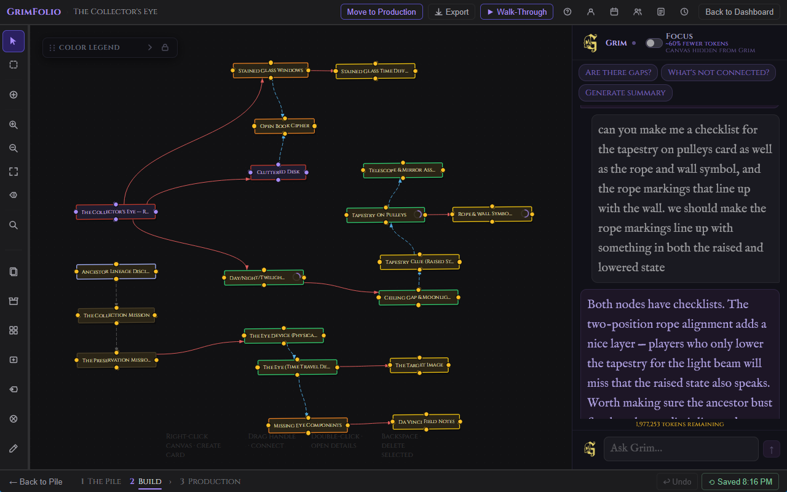
The Left Toolbar
A narrow vertical toolbar on the left edge of the canvas. Tools are grouped into two sections — navigation and selection modes on top, workspace tools on the bottom.
Left Toolbar — Top Section
| Tool | Icon | What it does |
|---|---|---|
| Select | Cursor arrow | Default mode. Click to select cards, drag to move, drag from handles to connect. Tooltip: "Select (Esc)" |
| Multi-Select | Dashed rectangle | Drag across empty canvas space to select cards inside the box. Scroll wheel or two-finger trackpad to pan while in this mode. Ctrl+click adds individual cards to selection. |
| Place Anchor | Circle + crosshair | Click anywhere on the canvas to place a routing waypoint anchor. Tool automatically returns to Select mode after placement. |
| Zoom In | Magnifier + | Zooms in one step. |
| Zoom Out | Magnifier - | Zooms out one step. |
| Fit to Screen | Four-corner arrows | Snaps the camera to show all placed cards. Instant, no animation. |
| Edge Labels | Hexagon with lines | Toggles visibility of edge labels — the short text added to connections via right-click. Does NOT affect path label pills, which are always visible regardless of this toggle. |
| Search | Magnifier | Opens the canvas search bar. Auto-focuses the input on open. Escape closes it and clears the query. |
Left Toolbar — Bottom Section
| Tool | Icon | What it does |
|---|---|---|
| Pile Drawer | Stacked cards | Opens and collapses the Pile Drawer on the left. |
| Inventory | Open box | Opens the Inventory panel scoped to this project. |
| Libraries | Four squares | Opens a popout with three sub-items: Documents, Linked Projects, Inspiration Library. |
| Create Card | Rectangle + | Click any spot on the canvas to place a new card at that position. |
| Path Label | Hexagon | Click any connection to place a floating label pill on it. |
| Eraser | Circle X | Click any edge or anchor node to delete it. |
| Drawing Tools | Pencil | Opens the Drawing Tools panel. |
| Team Notepad | Notepad | Opens the shared team notepad. Studio plan only — hidden on other plans. |
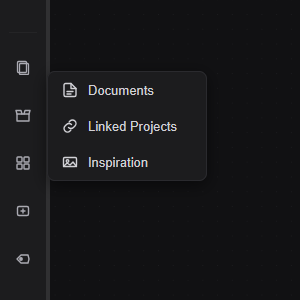
Search
The search bar is opened from the Search button in the left toolbar. It auto-focuses the input on open. Escape closes it and clears the query.
| Element | What it does |
|---|---|
| Search input | Filters cards in real time by title, type, or notes. Matching cards highlight in place. Non-matching cards dim. |
| Edge Labels toggle | Shows or hides all edge label text on connections. Useful when the canvas is dense. Path label pills are unaffected. |
The Pile Drawer
The Pile Drawer opens on the left side of the canvas. It contains every card from Stage 1 that has not yet been placed on the canvas. Cards are grouped by type. Each group has a colored left border. Fully placed groups hide themselves.
The auto toggle controls whether the drawer opens automatically each time you enter Stage 2.
Placing Cards
| Method | What happens |
|---|---|
| Drag onto canvas | Card lands at the drop position. |
| Hover card and click + | Card appears near the center of the visible canvas area. |
Double-click any pile card to read its title and notes in a popup. Right-click for the same option via context menu.
Grim-Created Cards
When Grim creates cards they appear in the Pile Drawer with a 4-second purple glow and a ✦ indicator dot. The drawer header badge pulses when Grim-new cards exist while the drawer is closed.
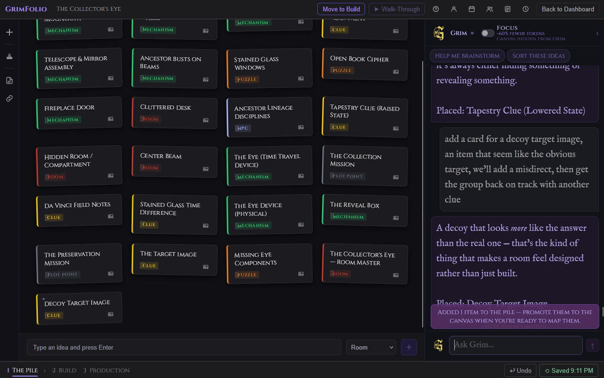
Cards on the Canvas
Interactions
| Interaction | Result |
|---|---|
| Single click | Selects the card. |
| Double-click | Opens the card detail drawer. |
| Right-click | Opens the card context menu. |
| Drag | Moves the card. Position saves on release. |
| Drag from handle | Starts a connection. |
Handles
Each card has connection handles on all four sides. Hover a card to reveal them. Drag from any handle toward another card to create a connection. The canvas assigns the closest exit direction automatically.
Card Sizes
Right-click any card to access the size picker.
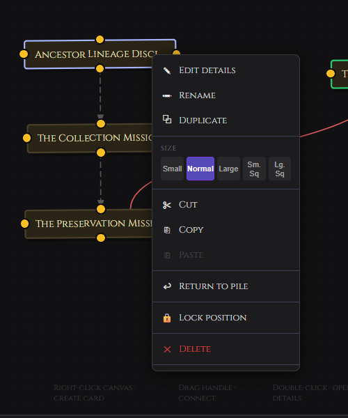
| Size | Dimensions | Best for |
|---|---|---|
| Small | 140px wide | Dense canvases where a card is a known landmark. |
| Normal | Default | General use. |
| Large | 320px wide, 130px min height | Hub cards or anything that needs to stand out spatially. |
| Small Square | 140×140px | Compact visual anchors. |
| Large Square | 200×200px | Visual balance or section anchors. |
Locking Position
Right-click any card and choose Lock position to prevent accidental dragging. A lock icon appears in the top-left corner of locked cards. Double-click still opens the detail drawer. Right-click again and choose Unlock position to restore movement.
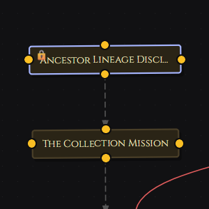
Multi-Select
Click the lasso icon in the left toolbar to enter Multi-Select mode. Drag across empty canvas space to draw a rubber-band selection box. Any cards inside the box when you release are selected together. Ctrl+click adds individual cards to an existing selection.
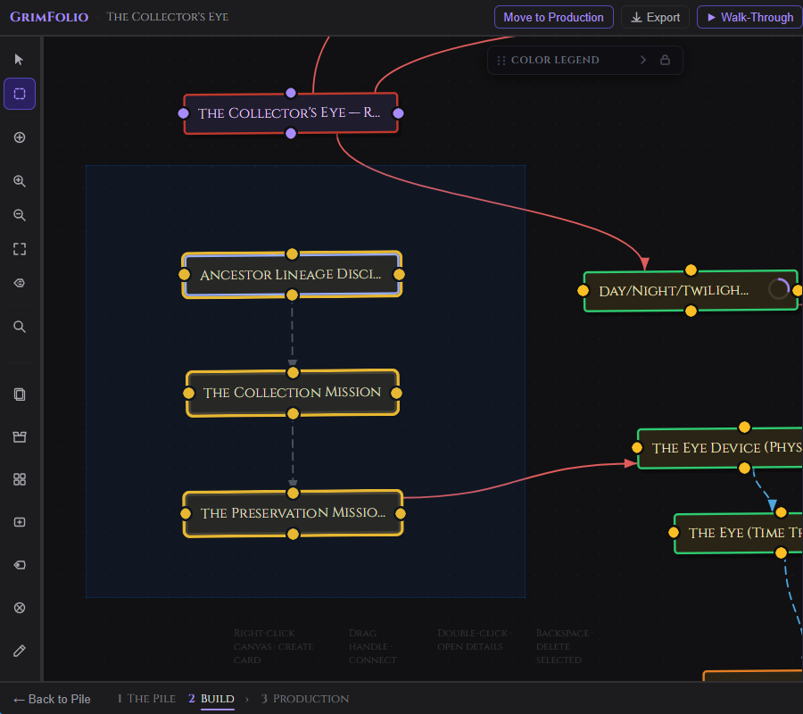
Right-click any selected card to open the multi-card context menu. Available actions apply to all selected cards at once: group, copy, cut, duplicate, return to pile.
To pan the canvas while in Multi-Select mode use the scroll wheel, two-finger trackpad, or middle-mouse drag. Left-drag is reserved for the selection box.
Undo
Press Ctrl+Z (Windows) or Cmd+Z (Mac) from anywhere on the canvas to undo the last action. An Undo button is also available in the bottom bar beside the Restore Points button.
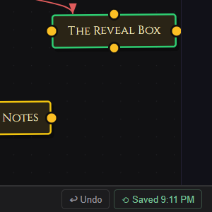
What is undoable: card moves, edge creates, edge deletes, card creates from canvas, card deletes from canvas.
What is not undoable: note edits, budget changes, checklist edits, and anything in the card detail drawer. These persist continuously. For deeper rollback use Restore Points.
Keyboard Shortcuts
| Shortcut | Action |
|---|---|
Cmd/Ctrl + C |
Copy selected card. |
Cmd/Ctrl + X |
Cut selected card (confirmation required). |
Cmd/Ctrl + V |
Paste at cursor position. |
Ctrl+Z / Cmd+Z |
Undo last canvas action. |
Backspace |
Delete selected card (confirmation required). |
Escape |
Exit active tool or close detail drawer. |
Card Detail Drawer
Double-click any card to open its detail drawer. It slides in from the right. The canvas stays visible and interactive behind it.
The drawer has two panels.
Left Panel
| Element | What it does |
|---|---|
| Notes | Free-text field. Auto-saves 800ms after you stop typing. |
| Elements | A tagged list of sub-components, props, effects, or other elements attached to this card. |
Right Panel
| Element | What it does |
|---|---|
| Type picker | The card's category type. |
| Cards and Colors | Opens the Type Manager to add, remove, recolor, or organize types. |
| Title | Editable. Saves on blur or Enter. |
| Status | Click to cycle: blank, In Progress, On Hold, Complete, Cancelled. |
| Icon | Single character or emoji pinned to the card. |
| Subtitle | Secondary descriptor shown in the card header. |
Sections
All sections are collapsible. A count badge shows when a section has content.
Photos — Upload reference photos. The "Show on canvas" toggle displays the selected photo as the card's background tile on the canvas.
Inspiration — Link images from the project's Inspiration Library. The GrimVision button opens the AI concept art panel.
Checklist — Add and check off task items. A completion ring appears on the card's canvas tile reflecting progress.
Budget — Add line items with name, quantity, unit cost, actual cost, and status. Status cycles per line: Planned, Ordered, Received, In Progress, Installed. Set a budget cap for the card. The Remaining line turns red when over budget.
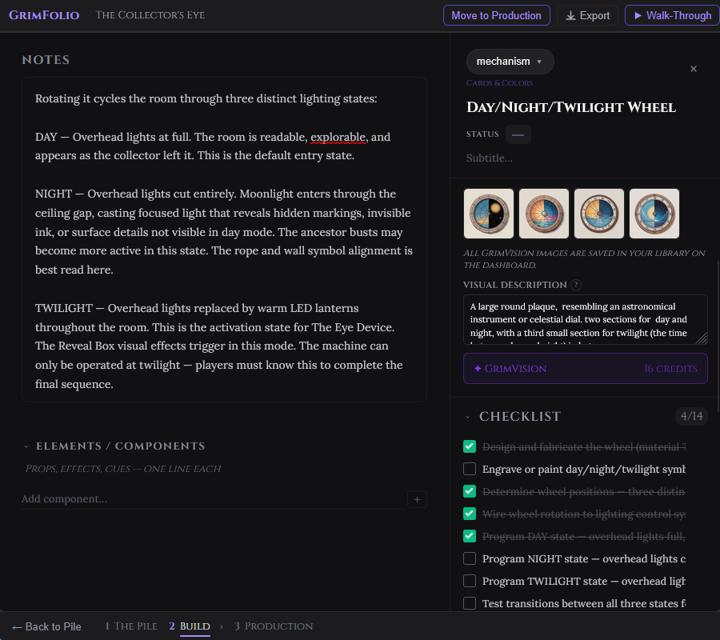
Links — Read-only. Shows all connections to and from this card with direction arrows. Outgoing connections show as →, incoming as ←.
Inventory — Assign physical inventory items from linked collections to this card.
Connections and Path Labels
Drag from any card handle to another card to create a connection. The canvas draws a curved path with an arrowhead pointing toward the target. Connection direction matters — Walk-Through follows arrows forward.
Path Labels
A path label is a text pill floating on a connection that describes the relationship: "blocks," "leads to," "depends on." Right-click any connection and choose Edit path label to set one, or use the Path Label tool in the left toolbar and click directly on any connection. The pill appears mid-edge and can be dragged along the path to reposition it.
Path labels appear in Walk-Through navigation buttons.
Anchor Nodes
Anchors are small purple circles used as routing waypoints. They have no title, no detail view, and no content. They bend connections around other cards and create cleaner path geometry.
Place an anchor:
- Right-click the canvas and choose Add anchor.
- Activate the Place Anchor tool in the left toolbar then click anywhere on the canvas.
Each anchor supports exactly one incoming and one outgoing connection. Attempting a third connection is blocked with a warning.
Anchors are invisible to Walk-Through, exports, Grim, and card count limits.
Card Groups
Select two or more cards, right-click any of them, and choose Group N selected cards. A colored boundary box wraps them with an editable label. The boundary auto-sizes as members move.
Dragging the group boundary or label moves all member cards together. Individual cards inside a group can still be dragged independently.
Right-click a group boundary for group options:
| Option | What it does |
|---|---|
| Rename | Renames the group. |
| Hide / Show Boundary | Toggles the visible boundary ring. |
| Fill opacity | 10%, 15%, 25%, or 50%. |
| Reset to auto-size | Recalculates the boundary to fit current member positions. |
| Ungroup | Dissolves the group, keeps all cards in place. |
Add to Group / Remove from Group are available on individual card right-click menus. Add opens a group picker. Remove clears immediately.
Context Menus
Canvas — right-click empty space
| Item | Action |
|---|---|
| New Card | Opens card creation modal at click position. |
| New room tile | Opens card creation pre-set to room tile style. |
| Paste | Pastes clipboard card at cursor position. |
| Add anchor | Places an anchor at click position. |
| Add Canvas Image | Opens picker to place a reference image on the canvas. |
Card — right-click any card
| Item | Action |
|---|---|
| Edit details | Opens the card detail drawer. |
| Rename | Activates inline title editing. |
| Duplicate | Creates a copy offset from the original. |
| Size | Picker: Small, Normal, Large, Small Square, Large Square. |
| Cut | Copies to clipboard then deletes (with confirmation). |
| Copy | Copies title, status, notes, checklist, and budget to clipboard. |
| Paste | Pastes clipboard card near cursor. |
| Copy to [Project] | Copies card to the pile of a linked project. |
| Return to pile | Removes card from canvas, returns it to the pile drawer. |
| Lock / Unlock position | Prevents or restores accidental dragging. |
| Delete | Deletes card with confirmation. |
| Group options | Group selected cards, Add to Group, Remove from Group. |
Connection — right-click any connection
| Item | Action |
|---|---|
| Edge label | Short text on the line, up to 25 characters. |
| Line style | Solid, Dashed, Dotted. |
| Color | 8 choices: red, amber, teal, sky, purple, pink, slate, gold. |
| Edit path label | Opens the floating path label editor. |
| Clear path label | Removes the path label pill. |
| Delete | Removes the connection. |
Select multiple connections and a bulk toolbar appears to apply color or style to all at once.
Anchor — right-click anchor node
| Item | Action |
|---|---|
| Delete anchor | Removes the anchor and its connections. |
Restore Points
Restore Points are full project snapshots available to Studio plan members. Access them from the bottom bar beside the Undo button.
The panel shows up to 10 auto snapshots (created automatically on project open and after significant changes) and up to 5 manual snapshots (created by clicking Save snapshot). Each restore point shows a timestamp. Right-click any entry to rename or delete it. Click Restore to roll the canvas back to that state.
Walk-Through Mode
Walk-Through traces the canvas as a guided sequence, following the direction of your connections one card at a time. Use it to rehearse a guest experience, a narrative path, or any sequence that has a direction.
The Walk-Through button lives in the top bar. It is disabled until at least one connection exists.
Click Walk-Through to enter pick mode. The canvas dims and all cards pulse. Click the card where the sequence begins.
The Drawer
A full-width drawer slides down from the top and locks in place. The canvas stays live behind it.
| Element | What it does |
|---|---|
| Card title | Name of the current card. |
| Status pill | Current card status. |
| Type badge | Card type. |
| Notes | Card notes if any exist. |
| Action row | Continue button (single path) or fork buttons (multiple outgoing connections). |
| Breadcrumb footer | The full path taken so far. Click any crumb to jump back to that card. |
← Back steps one card back. Hovering a Continue or fork button highlights the corresponding connection and glows the destination card.
Forks
When a card has multiple outgoing connections the action row shows each option as a button. Path labels appear in the button text. Choose one to continue down that branch.
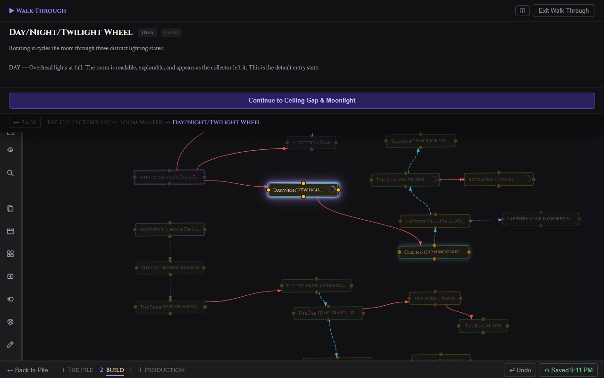
Presentation Mode
Click the expand button in the Walk-Through toolbar to collapse all chrome — the Grim panel closes, the top bar hides, and only the drawer and canvas remain. The canvas stays dark even in light mode.
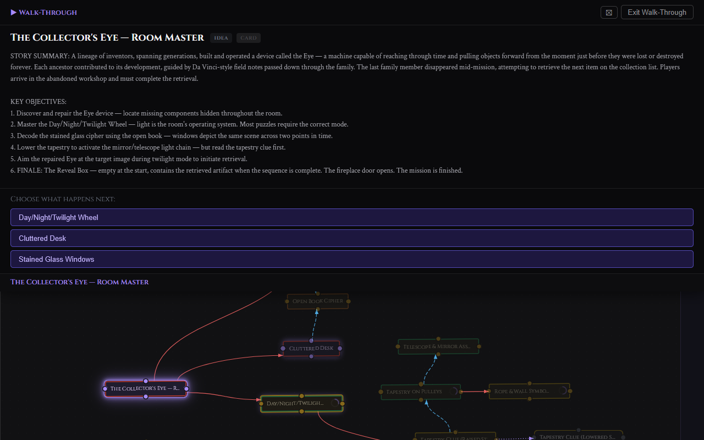
Press Escape while not in presentation mode to exit Walk-Through entirely.
Drawing Tools
The drawing layer sits above the canvas and below card nodes. Use it to sketch floor plans, annotate card positions, measure spaces, or block out zone boundaries. Everything drawn is invisible to Grim, Walk-Through, exports, and card counts.
Click the pencil icon in the left toolbar to open the Drawing Tools panel. Drawing tools work well alongside canvas images — load a floor plan as a canvas image and draw zone boundaries on top of it.
Draw Tools
| Tool | What it does |
|---|---|
| Freehand | Click and drag to draw a freeform stroke. |
| Line | Click and drag to draw a straight line. Hold Shift to constrain to 45-degree angles. |
| Rectangle | Click and drag to draw a rectangle. |
| Circle / Ellipse | Click and drag to draw an ellipse. |
| Text label | Click to place a text element. Type your label then press Enter or click away. Double-click an existing label to edit it. |
Edit Tools
| Tool | What it does |
|---|---|
| Select / Move | Click a shape to select it. Drag to reposition. Shift-click to add to selection. |
| Eraser | Click any drawn shape to delete it. |
Keyboard shortcuts while Drawing Tools panel is open:
| Key | Action |
|---|---|
Escape |
Deselect all or cancel active drawing. |
Delete / Backspace |
Delete selected shapes. |
Ctrl+Z |
Undo last drawing action (local session stack, separate from canvas undo). |
Ctrl+C |
Copy selected shape. |
Ctrl+V |
Paste copied shape offset by 20px. |
Stroke and Style Controls
Stroke — Available for all tools except Text. Pick a color and set stroke width: 1, 2, 4, or 8px.
Text — Color picker for text color and font size buttons: 12, 16, 24, or 36px.
Fill — Available for Rectangle and Circle. Toggle fill on and pick a fill color. Off by default.
Opacity — Slider from 10% to 100%. Applies to all shapes.
Scale
Set a real-world scale — one grid square equals a measurement in ft, m, cm, or in. While drawing a rectangle, circle, or line a live dimension label appears showing the shape's size in your chosen units. Dimension labels also persist on placed shapes.
Snap Options
Grid snap — Constrains shape start and end points to the 16px grid.
Edge snap — Rectangles and circles snap to the edges of other existing rectangles and circles when drawn or moved close to them. The target shape highlights in purple when a snap occurs.
Hide Canvas
The Hide Canvas button in the drawing panel hides all cards, connections, groups, and canvas images. Only your drawings remain visible. The grid stays visible. Click Show Canvas to restore.
Clear All Drawings
Click Clear all drawings at the bottom of the panel. Click again to confirm. This removes all drawings for the current project permanently.
Canvas Images
Canvas images are photographs, floor plans, or AI-generated artwork placed directly on the Build canvas. They sit behind all cards and drawing layers. They are not cards and do not appear in the Pile, Walk-Through, Grim context, or exports.
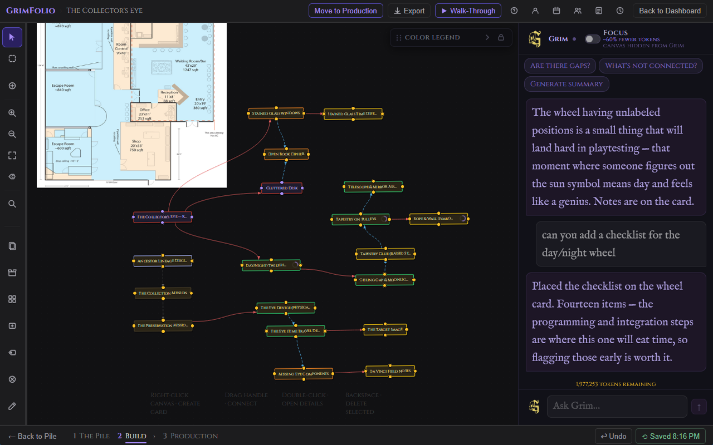
Placing an Image
Right-click any empty area of the canvas and select Add Canvas Image. The image picker opens with three tabs:
| Tab | What it shows |
|---|---|
| Upload | File picker. Accepts JPG, PNG, WebP, GIF up to 20MB. |
| Inspiration Library | All images from your Inspiration Library. |
| GrimVision Library | AI-generated images from GrimVision. |
Image Controls
Click a placed image to select it. A gear button appears in the top-right corner. Click it to open the image settings panel.
| Control | What it does |
|---|---|
| Rotation | Slider and numeric input. Range -180 to 180 degrees. |
| Opacity | Slider and numeric input. Range 0 to 100%. |
| Mirror H | Flips the image horizontally. |
| Mirror V | Flips the image vertically. |
| Bring to Front | Raises the image above other canvas images. |
| Send to Back | Lowers the image below other canvas images. |
| Lock position | Prevents the image from being moved by dragging. |
| Delete image | Removes the image immediately. |
Resize handles appear on edges and corners when an image is selected and unlocked at 0 degrees rotation. Drag any handle to resize. Hold Shift to maintain the original aspect ratio.
Grim on the Canvas
Grim stays in the right panel throughout Stage 2. He reads both the canvas and the pile at the start of each turn.
When Grim creates cards they go to the Pile Drawer, not onto the canvas. They arrive with a purple glow and a ✦ indicator. Drag them from the drawer to place them where you want them.
| Grim action | What it does |
|---|---|
| Create cards | Adds cards to the Pile Drawer with title, type, and notes. |
| Append to notes | Adds content to an existing card's notes without overwriting. |
| Replace notes | Rewrites a card's notes from scratch. |
| Add elements | Adds items to a card's Elements list. |
| Create checklist | Adds checklist items to a canvas card. |
| Create budget lines | Adds budget line items to a canvas card. |
| Suggest connections | Proposes connections between existing canvas cards. Requires your approval before anything is drawn. |
Grim cannot add checklists or budget lines to Pile cards. If you ask Grim to act on all cards and some are still in the pile, Grim confirms what was done for canvas cards and notes which pile cards were skipped.
Grim does not delete cards, connections, or any project data.
For full Grim documentation see the Grim page.